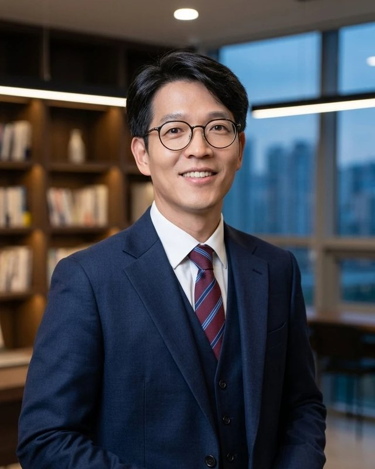
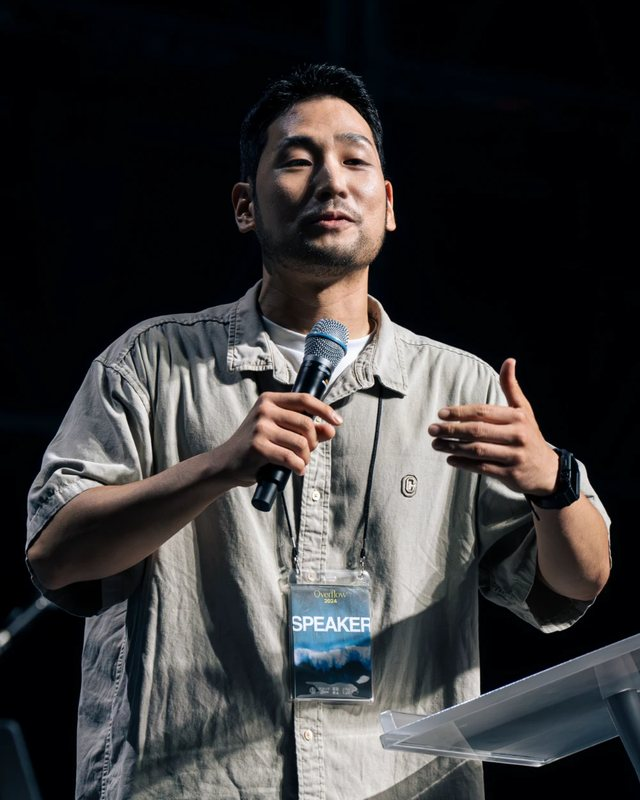
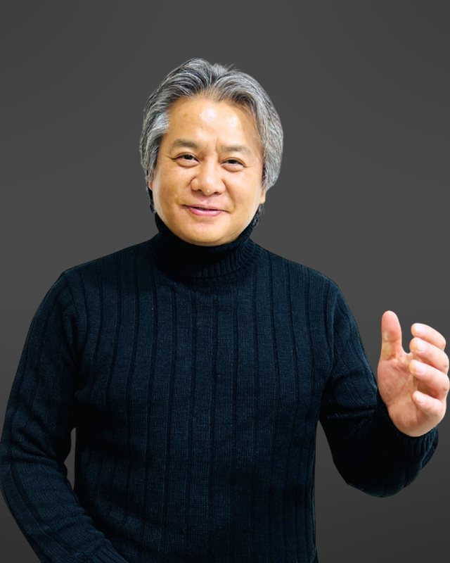
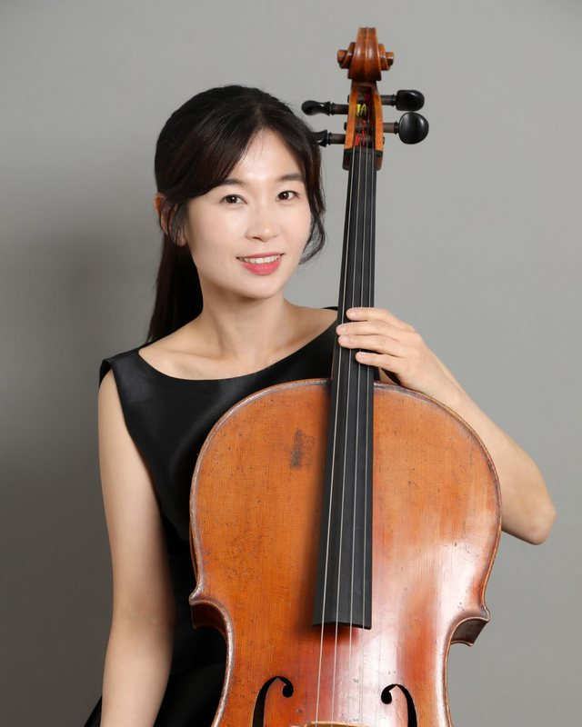
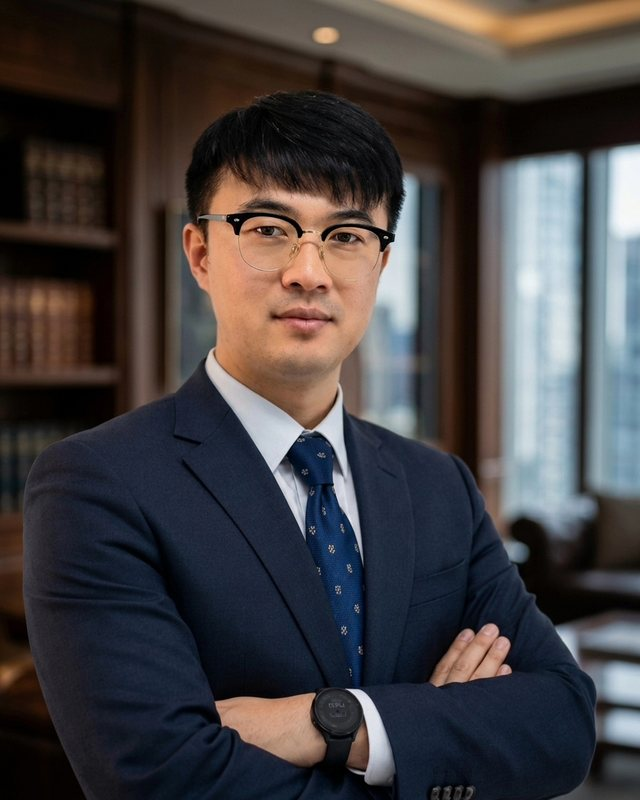
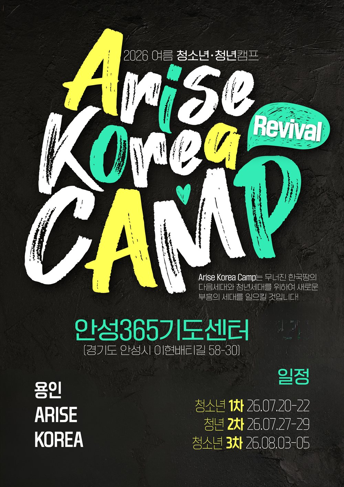
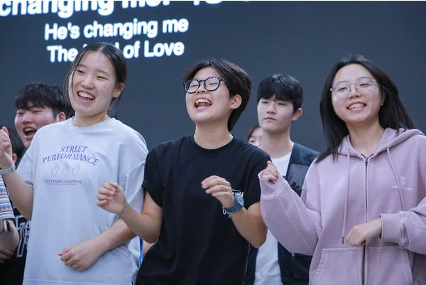

홈 › 캠프 › 영성 캠프 › 연합 캠프
연합 캠프
이번 2027 겨울 5~7차 캠프는 중 · 고등학생부터 대학생 · 직장인 청년까지 한자리에서 함께 모입니다.
2027 Winter
이번 캠프 일시 · 장소
세 차수 모두 같은 내용으로 진행되니 원하는 날짜를 선택해 신청하세요.
5차
2027. 1. 7 ~ 9
목요일 → 토요일 · 2박 3일
6차
2027. 1. 14 ~ 16
목요일 → 토요일 · 2박 3일
7차
2027. 1. 21 ~ 23
목요일 → 토요일 · 2박 3일
| 주제 | REBUILD · 무너진 땅에, 새로운 세대를 (예레미야 31:4) |
|---|---|
| 장소 | 태안수양관 (AKC 자체 운영 시설) · 충남 태안군 소원면 소근로 630-15 |
| 대상 | 중학생부터 대학생 · 직장인 청년까지 — 교회 출석 여부와 관계없이 누구나 |
| 모집 인원 | 차수별 최대 250명 |
| 참가비 | 청년 · 청소년 90,000원 · 인솔자 50,000원 (숙식 포함 · 교통 미포함) |
| 신청 기간 | 2026. 9. 18(금) 오전 8시 ~ 12. 28(월) |
| 주최 | 전국의 지역교회 · 공동체 연합 (AKC) |
| 신청 방법 | 온라인 신청 (개인 · 단체) 후 7일 안에 참가비 입금 · 농협 301-0318-3473-71 (대한예수교장로회(백석대신) IM) · 신청 안내 · 환불 규정 |
| 문의 | 010-2977-9586 · AriseKoreaCamp@gmail.com |
Timetable
2박 3일 일정표
세 차수 모두 같은 내용으로 진행됩니다. 세부 시간은 현장 상황에 따라 조정될 수 있습니다.
Speakers
강사진 소개
차수마다 다른 강사진이 말씀과 찬양, 연주로 함께합니다.
5차2027. 1. 7(목) ~ 9(토)
박윤환 목사
- RM 미니스트리 대표
- RM교회 담임목사
- 인투주니어학원 팀장

박성훈 목사
- 프로토스 미니스트리 대표
- 생명시내교회 담임목사
- 한영대 & Telos University 교수

김선교 선교사
- 다윗의 열쇠 대표
- 라이트 하우스 키퍼스 처치 대표
- 설교자 & 강사
6차2027. 1. 14(목) ~ 16(토)

조지혁 목사
- 엘벧엘 미니스트리 대표
- 엘벧엘 생명교회 담임목사
조건호 선교사
- Arise Korea 대표
- 인투유학 원장

임보람 첼리스트
- 유튜브 첼로피아 운영
- CBS 새롭게 하소서 · KBS 인간극장 출연
7차2027. 1. 21(목) ~ 23(토)

이석윤 목사
- 원웨이 미니스트리 대표
- 우리동네커피 대표
장두진 목사
- 그레이스 미니스트리 대표
- 세계로교회 담임목사
- 세계중앙교회 대표
드러머 리노
- 2018 평창올림픽 라이브 사이트 피날레 단독공연자
- 아티스트
Guide
참가 안내
- 준비물 · 성경책, 세면도구, 따뜻한 방한복과 실내복, 편한 복장, 여벌 옷, 개인 약품 (상세 목록은 등록 완료 후 문자로 발송)
- 숙소 · 남녀 분리 팀별 숙소 (성별 · 연령을 고려해 배정)
- 안전 · 전담 스태프 24시간 동행, 긴급 연락망 운영
After Camp
더 뜨거워지는 캠프
지난 캠프의 포스터와 현장입니다. 캠프는 3일이지만, 그 뒤의 이야기가 더 뜨겁습니다.

